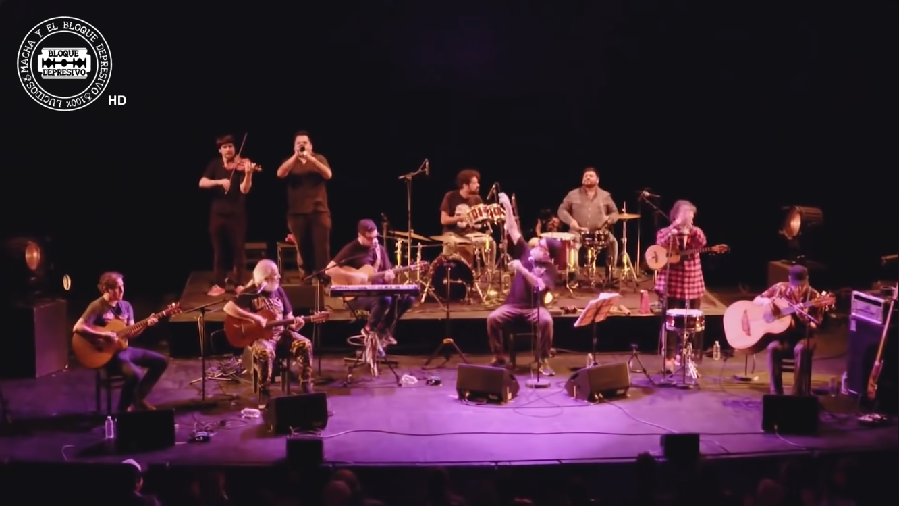
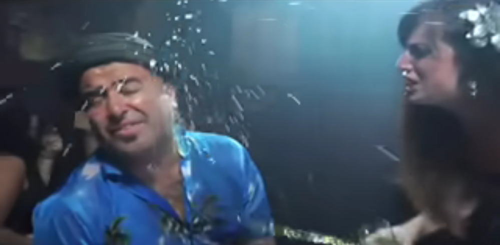
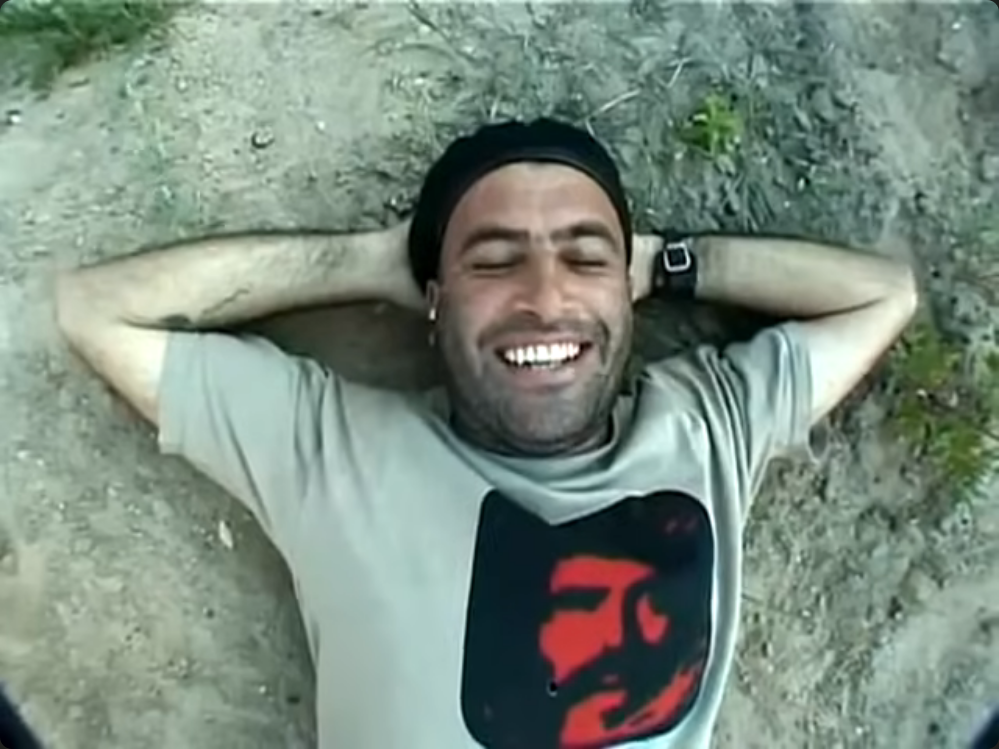
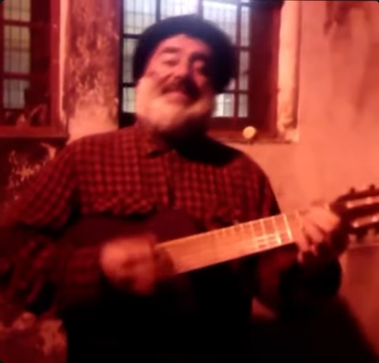
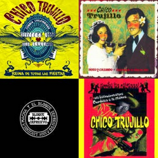

chico trujillo y sus besos de fuego
 Macha y El Bloque Depresivo, L'Opéra de Lyon.Fui introducido a Chico Trujillo en la pega por el jefe, un viejito cuyos favoritos son Leo Dan, Mon Laferte, y Chico Trujillo. Colocaba el mismo video en el televisor de la boti todos los santos días: un concierto en Francia de Macha y El Bloque Depresivo.
Una hora y media de concierto, repetido casi que todos los días. En poco tiempo terminé perdiendo la cuenta de cuántas veces he llegado a presenciar el mismo video para iniciar la mañana - primera hora, primera música que se escuchaba en la boti. El orden de las canciones memorizado lo tengo, y sus letras, aún con mi memoria que deja tanto por desear, casi lo mismo.
Los dos tíos con los que trabajo - que a uno lo echaron hace poco, por cierto, que te vaya bien tío Pato - ya estaban chatos, pero a más no poder. Ya era un chiste interno que otro día más llegara el hombrecito a colocar el mismo video. Daaale y que dale con la cuestión. Pero fíjate que a mí no me cansaba, oye. Por más que sonara, por más que se repitiera, por más que ya sabía cuál era la próxima que venía, jamás me llegué a aburrir.
Y es que es muuuy bueeeno, wn.
Cada mañana se me hacía rápida porque era cuestión de trabajar mientras que esperaba con ansias el momento en el que pasaran a tocar mi favorita del concierto, Sin Excusas.

« Y si vienes con tus manos, yo te juro que las tomaré conmigo. »
La canción es para emocionarse. Yo la siento tanto al escucharla que me voy del mundo, y de tantas cosas, justo llego a parar en una ficticia lucha en vano de ganarle al divorcio. Con el buildup de canciones previas, el sentimiento está ahí.
Cómo será ese día en el que ni un milagro te salva tu primer matrimonio... Pero es tu turno, imagínatelo tú, que estás en el protagonismo de esta sección. Tu matrimonio está en el inminente colapso, y lo que algún día lo solucionaba ya no genera el mínimo de los arreglos. No hay parche curita para esto, querida.
Has resignado.
Estaba escrito. Nada lo salvaba. Has dejado de buscar y pedir una excusa válida, motivo alguno... Alguno que justifique tal final, tal resultado, que con el tiempo llegaste a olvidar qué tanto lo temías. Se te fue la conexión que algún día te invitó a un abrazo cordial de bienvenida, a un lugar seguro en el que podías formar el resto de tu vida.
Con lo que algún día convertiste en tu hogar, te volvieron a presentar el frío. La ausencia.
...
Se supone que estaba hablando de Chico Trujillo.
A dónde me fui...
 ¿Cierto que tiene aires de Karl Marx?
¿Cierto que tiene aires de Karl Marx?
Aldo Asenjo es su nombre, no sabía hasta hace como media hora, siendo hoy actualmente martes 24 de junio 01:44. Siempre se aprenden cosas nuevas.
En una nota más personal, con Karl Marx sopaipillas descubrí más íntimamente Chile, y te dejo las tres primeras canciones de la playlist como mi mayor impresión. Quizá si escuchas las canciones con los videoclips, podrás entender mejor a lo que me refiero, porque con los videoclips es que he tenido una experiencia más personal. No sé cuándo es que puedas leer esto - ya sea en el metro, en la U, en casa, en Séoul, pero si no puedes hacerlo, está bien. No creo que mi mensaje se pierda.
Chécate acá el video de Y Si No Fuera.
« Hacer de esta normalidad, una terraza donde estar, y desde allí abrir los ojos al mundo. »
Chile es un país que lo abriga la nostalgia. Tu tierra de origen, Dani, está decorada de melancólicos con una sonrisa cálida. Chilito se siente como un invierno con aires cercanos de verano, anclado indeciso con ese cambiar de temporada que uno espera, desea... Pero en el fondo se sabe que es lo mismo, sólo que en invierno uno se abriga más, y excluyendo la nieve que adorna la cordillera, todo lo demás se mantiene igual. Las conversaciones mantendrán su esencia, fiel a la temporada.
- Hace más calor que la mierda.
De algo vamos a tener que hablar. Pareciera que criticáramos el clima, como quien penurias sufriera, pero es una conversación que podríamos tener una y otra vez, y nadie se cansa. Una apertura conversacional más íntima que un ilegítimo optimismo.
Es una tierra de comunidad y pertenencia, donde alguien puede quejarse del smog santiaguino y las incomodidades de vivir en la capital, para luego recordar con lágrimas esa misma ciudad cuando la distancia aleja al chileno de su país.
Bueno es saber que hay un lugar en el mundo en donde se aceptan esos días grises. Donde lo solitario, el chileno lo agarra y convierte en hogareño. En donde no se rechazan las tristezas, ni se ocultan las dificultades, negando así el mundo. Sino que todo aquello lo recibirán dentro, a casa, e invitarán a Monsieur Penurias y Madame Preocupaciones a tomar la once, bailar incluso, hasta que a la pareja se le termine olvidando para qué vino - ¿a generar lamentos? ¿A entregar un recuerdo de lo que ya no estará entre ellos? « ¿Para qué vinimos, si ellos...? »
Si ellos aceptan el cabizbajo, siempre con un familiar recordatorio de que:
« ¿Y ves? Que es mejor cantando, que la pena pasa, todo tiene su porqué. »
Ya, la lista, que me fui caminando a la csm. Muchas canciones se llegan a complementar entre sí, entre el sentir y todas esas cosas complejas de humanos. No te diré que escuches álbumes en consecutiva, porque ni yo lo he llegado a hacer así, pero quizá esta playlist es un buen punto de partida:
LA LISTA
Hemos llegado.
Cacha, hay muuuchas canciones... Mi primera fijación fue con Sin Excusas. Luego con Loca. Luego con Regresa. Luego con... aaaaaa
Así que si te hablo de las que me gustaría que escuches, te termino hablando sobre todas. Pero en su alternativa, te daré las que, con ellas, no me he cansado todavía y escucho regularmente - aunque con ninguna me haya cansado en sinceridad. El top 3 está indiscutible para mí, y el resto son de las que más me gustan por igual. Pero créeme que con ninguna te equivocarás, y te reto más bien a buscar una que te parezca fome, y defiendas tu sospecha con un simple porqué.
Escúchala acá. O toca la imagen con los covers de los álbumes, igual funciona.En finales
Papuchi me había invitado a jugar Minecraft anoche lunes. Le dije que estaba ocupado escribiendo algo, que tenía que enviarlo en la mañana. Por alguna razón me quedé con esa idea, y estuve hasta las 3 de la mañana escribiendo, o en el intento de escribir. Tenía como la impresión de que tenía que enviarte todo esto antes de que tomaras el metro. Luego cuando me empezó a dar golpes bajos el sueño, ahí fue que me cuestioné porqué era tanta la insistencia mía de escribir en una sola sentada con unas 26 horas despierto y 1 jornada laboral pesándome en la existencia. Ahí me acordé que fue por el límite ficticio que le había dicho a Papuchi, no que realmente estabas esperando esto para un martes por la mañana. Dormí como desempleado.
Muchas gracias, Dani. Cuídate.